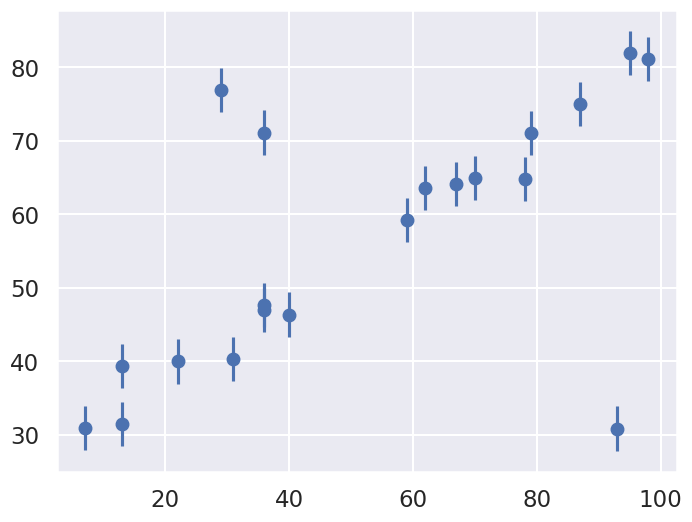
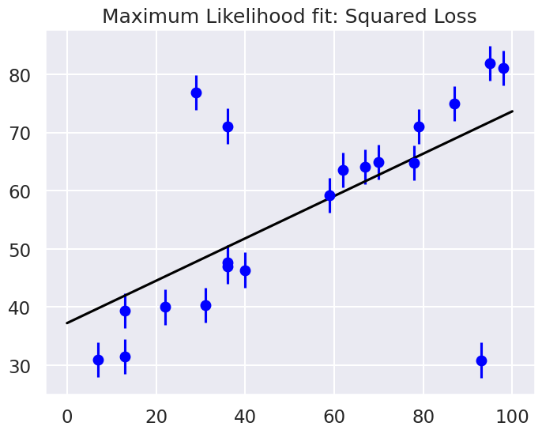
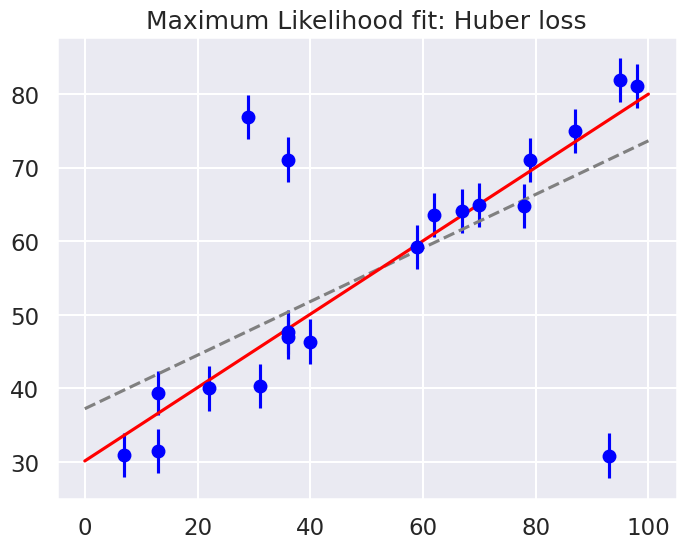
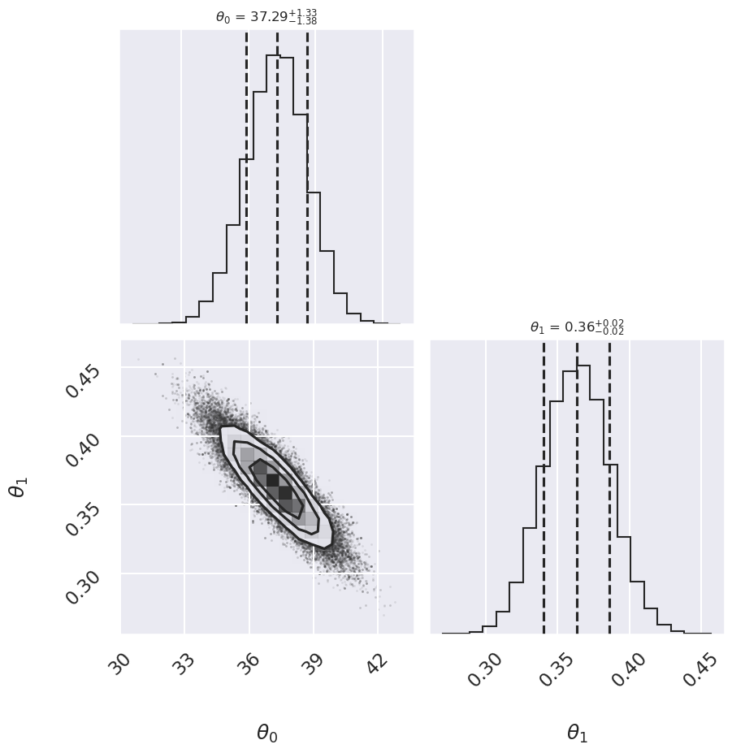
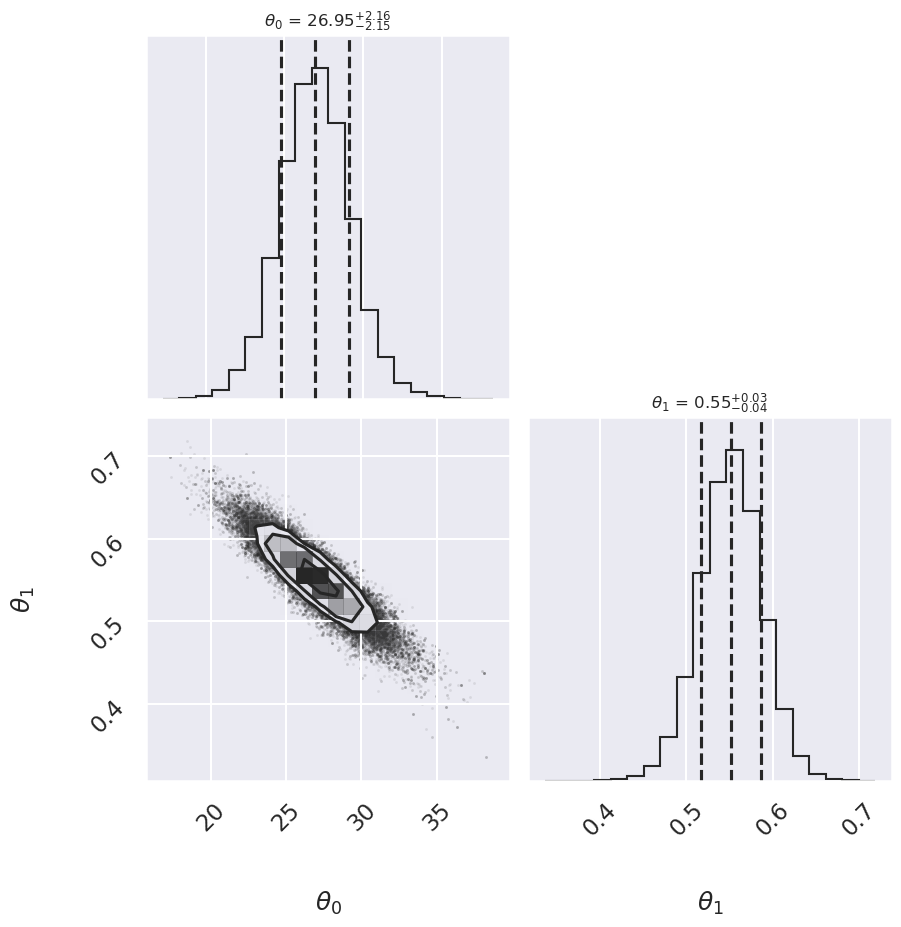
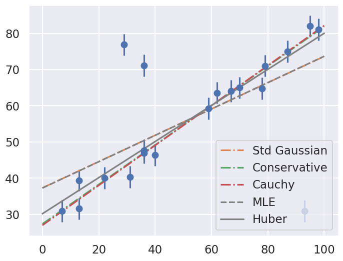
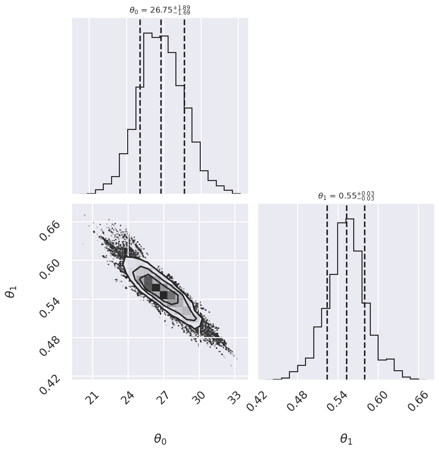
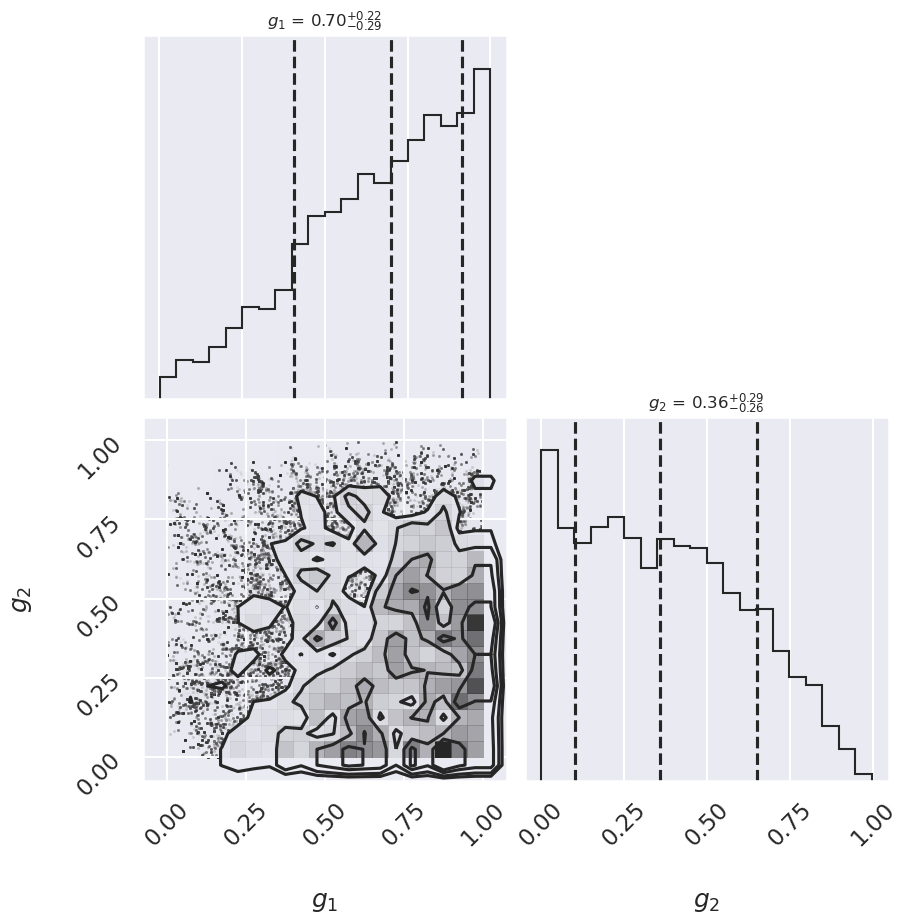
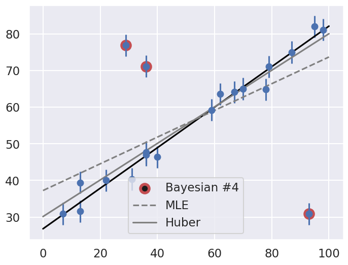

12.4. 📥 Demo: Illustrating approaches to outliers#
In this demo we re-apply the frequentist and Bayesian methods illustrated in the last two sections to account for outliers in an analysis of a linear fit to noisy data. The difference here is that you are able to generate new datasets to test the robustness of the results.
(Adapted from the blog post Frequentism and Bayesianism II: When Results Differ).
Example: good data / bad data#
In the previous sections we used a fixed dataset relating the observed variables \(x\) and \(y\), with the error of \(y\) stored in \(e\). Here we will generate new datasets with the function generate_line_data_with_outliers, which takes parameters that let you adjust the (random) generation of points with a specified number of outliers.
%matplotlib inline
import numpy as np
from scipy import optimize
import matplotlib.pyplot as plt
import seaborn as sns; sns.set(); sns.set_context("talk")
import emcee
import corner
/usr/share/miniconda3/envs/2025-book-env/lib/python3.11/site-packages/arviz/__init__.py:50: FutureWarning:
ArviZ is undergoing a major refactor to improve flexibility and extensibility while maintaining a user-friendly interface.
Some upcoming changes may be backward incompatible.
For details and migration guidance, visit: https://python.arviz.org/en/latest/user_guide/migration_guide.html
warn(
import numpy as np
def generate_line_data_with_outliers(
num=20,
x_min=0,
x_max=100,
a=0.5,
b=30.0,
sig0=3.0,
n_outlier=3,
outlier_scale=10.0,
seed=None,
integer_x=True,
sort_x=True,
):
"""
Generate data for a straight-line model with Gaussian noise and outliers.
Model:
y = a*x + b + Gaussian noise
Outliers:
n_outlier randomly selected points have an additional displacement
that is forced to be relatively far from the line.
The displacement has random sign and magnitude approximately
outlier_scale * sig0.
Parameters
----------
num : int
Number of data points.
x_min, x_max : float
Range for random x values.
a, b : float
Parameters of the line y = a*x + b.
sig0 : float
Standard deviation of the normal observational noise.
n_outlier : int
Number of points to turn into outliers.
outlier_scale : float
Typical outlier displacement in units of sig0.
seed : int or None
Random seed for reproducibility.
integer_x : bool
If True, generate integer x values.
sort_x : bool
If True, sort the data by increasing x.
Returns
-------
x : ndarray
x values.
y : ndarray
noisy y values, including outliers.
e : ndarray
error bars, all equal to sig0.
outlier_indices : ndarray
indices of the points selected as outliers.
"""
rng = np.random.default_rng(seed)
if n_outlier > num:
raise ValueError("n_outlier cannot be larger than num.")
# Generate x values
if integer_x:
x = rng.integers(x_min, x_max + 1, size=num)
else:
x = rng.uniform(x_min, x_max, size=num)
# Optionally sort x values
if sort_x:
order = np.argsort(x)
x = x[order]
# Gaussian noise about the line
y_true = a * x + b
y = y_true + rng.normal(loc=0.0, scale=sig0, size=num)
# Choose which points will become outliers
outlier_indices = rng.choice(num, size=n_outlier, replace=False)
# Add large outlier displacements.
# Each outlier is shifted either up or down.
signs = rng.choice([-1, 1], size=n_outlier)
# The absolute displacement is centered around outlier_scale * sig0.
# Taking abs() helps prevent accidentally tiny outlier shifts.
magnitudes = np.abs(
rng.normal(
loc=outlier_scale * sig0,
scale=0.5 * outlier_scale * sig0,
size=n_outlier
)
)
y[outlier_indices] += signs * magnitudes
# Error bars
e = sig0 * np.ones_like(y, dtype=float)
return x, y, e, sig0, outlier_indices
# Generate a dataset. Note that seed can be omitted to
# get a new dataset everytime this cell is run.
# We don't print out the outlier_indices by default, but you can
# add a print statement to check against the final result.
x, y, e, sig0, outlier_indices = generate_line_data_with_outliers(
num=20,
x_min=0,
x_max=100,
a=0.5,
b=30.0,
sig0=3.0,
n_outlier=3,
outlier_scale=10.0,
seed=101
)
np.set_printoptions(precision=0, suppress=True) # Set 3 decimal places
print("x = ", x)
print("y = ", y)
print("e = ", e)
x = [ 7 13 13 22 29 31 36 36 36 40 59 62 67 70 78 79 87 93 95 98]
y = [31. 39. 32. 40. 77. 40. 48. 71. 47. 46. 59. 64. 64. 65. 65. 71. 75. 31.
82. 81.]
e = [3. 3. 3. 3. 3. 3. 3. 3. 3. 3. 3. 3. 3. 3. 3. 3. 3. 3. 3. 3.]
We’ll visualize this data below:
fig = plt.figure(figsize=(8,6))
ax = fig.add_subplot(1,1,1)
ax.errorbar(x, y, e, fmt='o');

Our task is to find a line of best-fit to the data. The statistical model for the data is the same as introduced at the beginning of the chapter.
Standard Likelihood Approach#
For simplicity, we’ll use scipy’s optimize package to minimize the loss (in the case of squared loss, this computation can be done more efficiently using matrix methods, but we’ll use numerical minimization for simplicity here).
def residuals(theta, x=x, y=y, sigma0=sig0):
"""
Residuals between data y (a vector at points x) and the theoretical model,
which here is a straight line with theta[0] = b and theta[1] = m.
"""
delta_y = y - theta[0] - theta[1] * x
return delta_y / sigma0
def log_posterior_gaussian(theta):
"""
Returns the logarithm of the posterior, with a standard chi^2 likelihood
in terms of the residuals, with Gaussian errors as specified and a
uniform prior assumed for theta between 0 and 100.
"""
if (all(theta > 0) and all(theta < 100)):
return -0.5 * np.sum(residuals(theta)**2)
else:
return -np.inf # recall log(0) = -inf
def squared_loss(theta, x=x, y=y, sigma0=sig0):
"""Loss function is sum of squared residuals divided by 2, which
is what we usually call chi^2 / 2.
"""
delta_y = y - theta[0] - theta[1] * x
return np.sum(0.5 * (delta_y / sigma0) ** 2)
# Find the maximum likelihood estimate (MLE) for theta by minimizing the
# square_loss function using scipy.optimize.fmin. (Minimizing chi^2 gives
# the same result as maximizing e^{chi^2/2}.)
theta_MLE = optimize.fmin(squared_loss, [0, 0], disp=False)
print(f"MLE: theta0 = {theta_MLE[0]:.1f}, theta1 = {theta_MLE[1]:.2f}")
# Plot the MLE fit versus the data
xfit = np.linspace(0, 100)
yfit = theta_MLE[0] + theta_MLE[1] * xfit
fig, ax = plt.subplots(1, 1, figsize=(8,6))
ax.errorbar(x, y, sig0, fmt='o', color='blue')
ax.plot(xfit, yfit, color='black')
ax.set_title('Maximum Likelihood fit: Squared Loss');
MLE: theta0 = 37.2, theta1 = 0.36

Are the outliers exerting a disproportionate influence on the fit for this dataset?
If so, what is it about the squared loss function that makes this likely to happen.
In most cases we will find that the squared loss is overly sensitive to outliers, and this is causing issues with our fit. One way to address this within the frequentist paradigm is to simply adjust the loss function to be more robust.
Frequentist Correction for Outliers: Huber Loss#
The variety of possible loss functions is quite literally infinite, but one relatively well-motivated option is the Huber loss. The Huber loss defines a critical value at which the loss curve transitions from quadratic to linear. Let’s create a plot which compares the Huber loss to the standard squared loss for several critical values \(c\):
t = np.linspace(-20, 20)
def huber_loss(t, c=3):
"""
Returns either a squared lost function or a linear (abolute value) loss
function, depending on whether the |argument| is < c or >= c.
"""
return ((abs(t) < c) * 0.5 * t ** 2
+ (abs(t) >= c) * -c * (0.5 * c - abs(t)))
fig, ax = plt.subplots(1, 1, figsize=(8,6))
ax.plot(t, 0.5 * t ** 2, label="squared loss", lw=2)
for c in (10, 5, 3):
ax.plot(t, huber_loss(t, c), label=f"Huber loss, c={c}", lw=2)
ax.set(ylabel='loss', xlabel='standard deviations')
ax.legend(loc='best');

The Huber loss is equivalent to the squared loss for points that are well-fit by the model, but reduces the loss contribution of outliers. For example, a point 20 standard deviations from the fit has a squared loss of 200, but a c=3 Huber loss of just over 55. Let’s see the result of the best-fit line using the Huber loss rather than the squared loss. We’ll plot the squared loss result as a dashed gray line for comparison:
def total_huber_loss(theta, x=x, y=y, sigma0=sig0, c=3):
return huber_loss((y - theta[0] - theta[1] * x) / sigma0, c).sum()
# minimize the total Huber loss for c=3
theta2 = optimize.fmin(total_huber_loss, [0, 0], disp=False)
print(f"Huber: theta0 = {theta2[0]:.1f}, theta1 = {theta2[1]:.2f}")
fig = plt.figure(figsize=(8,6))
ax = fig.add_subplot(1,1,1)
ax.errorbar(x, y, sig0, fmt='o', color='blue')
ax.plot(xfit, theta_MLE[0] + theta_MLE[1] * xfit, color='gray',ls='--')
ax.plot(xfit, theta2[0] + theta2[1] * xfit, color='red')
ax.set_title('Maximum Likelihood fit: Huber loss');
Huber: theta0 = 30.1, theta1 = 0.50

By eye, has this worked as desired? Namely, is the fit much closer to our intuition?
As noted in an earlier section, a Bayesian might point out that the motivation for this new loss function is a bit suspect: as we showed, the squared-loss can be straightforwardly derived from a Gaussian likelihood.
The Huber loss seems a bit ad hoc: where does it come from?
How should we decide what value of \(c\) to use?
Is there any good motivation for using a linear loss on outliers, or should we simply remove them instead?
How might this choice affect our resulting model?
Bayesian approaches to erratic data#
We’ll consider four Bayesian approaches to outliers:
A conservative model (treat all data points as equally possible outliers).
Good-and-bad data model.
The Cauchy formulation.
Many nuisance parameters.
Approach no. 1: A conservative formulation#
Assuming that the specified error bars, \(\sigma_0\), can be viewed as a recommended lower bound, we can construct a more conservative posterior through a marginal likelihood (that is, we introduce \(\sigma\) as a supplementary parameter for what might be the true error, then integrate over it):
Note that \(\sigma_0\) doesn’t appear in the first pdf in the integrand and \(\boldsymbol{\theta}\) doesn’t appear in the second pdf. The prior is a variation of Jeffrey’s prior for a scale parameter (which would be \(1/\log(\sigma_1/\sigma_0) \times (1/\sigma)\) for \(\sigma_0 \leq \sigma < \sigma_1\) and zero otherwise),
for \(\sigma \geq \sigma_0\) and zero otherwise. (This enables us to do the integral up to infinity.) Conservative here means that we treat all data points with suspicion (i.e., we do not single out any points).
The likelihood for a single data point \(D_i\), given by \((x_i,y_i,\sigma_i=\sigma_0)\), is then
with \(R_i\) the residual as defined above.
Treating the measurement noise as independent, and assigning a uniform prior for the model parameters, we find the log-posterior pdf
We’ll also consider a Cauchy distribution for comparison.
def single_gaussian_likelihood(R_i, sigma_0):
"""
This likelihood is a zero-mean gaussian with standard deviation sigma_0.
"""
rsq = R_i**2
return np.exp(-rsq / 2.) / (sigma_0 * np.sqrt(2 * np.pi ))
def single_conservative_likelihood(R_i, sigma_0):
"""
This likelihood is the result of marginalizing over the standard
deviation sigma from sigma0 to infinity with a prior sigma0 / sigma^2.
"""
rsq = R_i**2
return (1-np.exp(-rsq / 2.)) / (sigma_0 * np.sqrt(2. * np.pi) * rsq)
def single_cauchy_likelihood(R_i, sigma_0):
"""
This likelihood is a Cauchy distribution.
"""
rsq = R_i**2
return 1 / (sigma_0 * np.pi * np.sqrt(2) * (1. + rsq / 2.))
r = np.linspace(-7, 7)
fig, ax = plt.subplots(1, 1, figsize=(8,6))
ax.plot(r, single_gaussian_likelihood(r,sig0), label="Gaussian",
lw=2, ls='--')
ax.plot(r, single_conservative_likelihood(r,sig0), label="Conservative",
lw=2, ls='-')
ax.plot(r, single_cauchy_likelihood(r,sig0), label="Cauchy",
lw=2, ls='-.')
ax.set(ylabel='Likelihood contribution',xlabel='Residual')
ax.legend(loc='best');

So by marginalizing over the error for each data point, we introduce long tails into the likelihood. The likelihood function is close to a Cauchy distribution in the tails, which is a particular case of a Student \(t\) distribution. (Remember the radioactive lighthouse!)
# Conservative error likelihood
def log_posterior_conservative(theta):
"""
Log posterior with uniform prior for theta and a Gaussian likelihood
"""
if (all(theta > 0) and all(theta < 100)):
r2 = residuals(theta)**2
return np.sum( np.log((1-np.exp(-r2/2))/r2) )
else:
return -np.inf # recall log(0) = -inf
Now we can sample using this conservative posterior and compare to the others.
If we wanted to get a general Student t distribution, we can do an integration of the variance over an inverse-gamma distribution or, equivalently, integrate over the inverse of the variance with a gamma distribtion. An animation of the latter is created in Student’s t-distribution from Gaussians.
Approach no. 2: Good-and-bad data#
In this approach, we are less pessimistic about the data. In particular, we allow for two possibilities:
a) the datum and its error are reliable;
b) the datum is bad and the error should be larger by a (large) factor \(\gamma\).
We implement this with the pdf for \(\sigma\):
where \(\beta\) and \(\gamma\) represent the frequency of quirky measurements and their severity. If we use Gaussian pdfs for the two cases, then the likelihood for a datum \(D_i\) after integrating over \(\sigma\) is
We won’t code this approach here but leave it to an exercise (see Sivia, Ch. 8.3.2 for more details). We will generalize this approach to the extreme in approach #4 below.
Approach no. 3: The Cauchy formulation#
In this approach, we assume \(\sigma \approx \sigma_0\) but allow it to be either narrower or wider:
Marginalizing \(\sigma\) (using \(\sigma = 1/t\)) gives the Cauchy form likelihood (this is a special case of the Student \(t\) distribution):
The log posterior is
# Cauchy likelihood
def log_posterior_cauchy(theta):
"""
Log posterior with Cauchy likelihood and uniform prior for theta
"""
if (all(theta > 0) and all(theta < 100)):
R_sq = residuals(theta)**2
return - np.sum( np.log(1 + R_sq/2) )
else:
return -np.inf # recall log(0) = -inf
Sampling to compare methods#
We’ll use the emcee sampler to generate MCMC samples of our posteriors.
print('emcee sampling (version: )', emcee.__version__)
ndim = 2 # number of parameters in the model
nwalkers = 10 # number of MCMC walkers
nwarmup = 1000 # "burn-in" period to let chains stabilize
nsteps = 10000 # number of MCMC steps to take
print(f'{nwalkers} walkers:')
# Starting guesses close to the MLE
starting_guesses = np.abs(np.random.normal(1, 1, (nwalkers, 2)))
starting_guesses[:,0] += theta_MLE[0]
starting_guesses[:,1] /= 10
starting_guesses[:,1] += theta_MLE[1]
logps = [log_posterior_gaussian, log_posterior_conservative,
log_posterior_cauchy]
approaches = ['Std Gaussian', 'Conservative','Cauchy']
mean_68CR = []
for ilogp,logp in enumerate(logps):
print(f"Log posterior: {approaches[ilogp]}")
# Sample the posterior distribution
sampler = emcee.EnsembleSampler(nwalkers, ndim, logp)
# Warm-up
if nwarmup > 0:
print(f'... EMCEE sampler performing {nwarmup} warnup iterations.')
pos, prob, state = sampler.run_mcmc(starting_guesses, nwarmup)
sampler.reset()
else:
pos = starting_guesses
# Perform iterations, starting at the final position from the warmup.
print(f'... EMCEE sampler performing {nsteps} samples.')
%time sampler.run_mcmc(pos, nsteps)
print("done")
samples = sampler.flatchain
lnposts = sampler.lnprobability
# Extract mean and 68% CR
th0_mcmc, th1_mcmc = map(lambda v: (v[1], v[2]-v[1], v[1]-v[0]),
zip(*np.percentile(samples, [16, 50, 84],
axis=0)))
mean_68CR.append((th0_mcmc,th1_mcmc))
# make a corner plot with the posterior distribution
fig, ax = plt.subplots(2,2, figsize=(10,10))
corner.corner(samples,labels=[r"$\theta_0$", r"$\theta_1$"],
quantiles=[0.16, 0.5, 0.84],fig=fig,
show_titles=True, title_kwargs={"fontsize": 12});
plt.show()
emcee sampling (version: ) 3.1.6
10 walkers:
Log posterior: Std Gaussian
... EMCEE sampler performing 1000 warnup iterations.
... EMCEE sampler performing 10000 samples.
CPU times: user 4.11 s, sys: 0 ns, total: 4.11 s
Wall time: 4.11 s
done

Log posterior: Conservative
... EMCEE sampler performing 1000 warnup iterations.
... EMCEE sampler performing 10000 samples.
CPU times: user 4.69 s, sys: 702 μs, total: 4.69 s
Wall time: 4.69 s
done
Log posterior: Cauchy
... EMCEE sampler performing 1000 warnup iterations.
... EMCEE sampler performing 10000 samples.
CPU times: user 4.54 s, sys: 0 ns, total: 4.54 s
Wall time: 4.53 s
done

fig = plt.figure(figsize=(8,6))
ax = fig.add_subplot(1,1,1)
ax.errorbar(x, y, sig0, fmt='o')
print("Summary: Mean offset 68% CR Mean slope 68% CR")
for i,approach in enumerate(approaches):
((th0,th0pos,th0neg),(th1,th1neg,th1pos)) = mean_68CR[i]
print(f"{approach:>20s} {th0:5.2f} -{th0neg:4.2f},+{th0pos:4.2f}",\
f" {th1:5.3f} -{th1neg:5.3f},+{th1pos:5.3f}")
ax.plot(xfit, th0 + th1 * xfit, label=approach, ls='-.')
ax.plot(xfit, theta_MLE[0] + theta_MLE[1] * xfit,
color='gray',ls='--',label='MLE')
ax.plot(xfit, theta2[0] + theta2[1] * xfit,
color='gray',ls='-',label='Huber')
ax.legend(loc='best');
Summary: Mean offset 68% CR Mean slope 68% CR
Std Gaussian 37.29 -1.38,+1.33 0.363 -0.023,+0.023
Conservative 27.34 -2.49,+2.43 0.545 -0.041,+0.041
Cauchy 26.95 -2.15,+2.16 0.552 -0.035,+0.035

Comment on the comparison between the approaches. Repeat with different datasets. Do the results depend strongly on the dataset?
Approach no. 4: Many nuisance parameters#
The Bayesian approach to accounting for outliers generally involves modifying the model so that the outliers are accounted for. For this data, it is abundantly clear that a simple straight line is not a good fit to our data. So let’s propose a more complicated model that has the flexibility to account for outliers. One option is to choose a mixture between a signal and a background:
What we’ve done is expanded our model with some nuisance parameters: \(\{g_i\}\) is a series of weights which range from 0 to 1 and encode for each point \(i\) the degree to which it fits the model. \(g_i=0\) indicates an outlier, in which case a Gaussian of width \(\sigma_B\) is used in the computation of the likelihood. This \(\sigma_B\) can also be a nuisance parameter, or its value can be set at a sufficiently high number, say 50.
Our model is much more complicated now: it has 22 free parameters rather than 2, but the majority of these can be considered nuisance parameters, which can be marginalized-out in the end, just as we marginalized (integrated) over \(p\) in the Billiard example. Let’s construct a function which implements this likelihood. We’ll use the emcee package to explore the parameter space.
To actually compute this, we’ll start by defining functions describing our prior, our likelihood function, and our posterior:
# theta will be an array of length 2 + N, where N is the number of points
# theta[0] is the intercept, theta[1] is the slope,
# and theta[2 + i] is the weight g_i
def log_prior(theta):
#g_i needs to be between 0 and 1
if (all(theta[2:] > 0) and all(theta[2:] < 1)):
return 0
else:
return -np.inf # recall log(0) = -inf
def log_likelihood(theta, x, y, e, sigma_B):
dy = y - theta[0] - theta[1] * x
g = np.clip(theta[2:], 0.001, 0.999) # g<0 or g>1 leads to NaNs in logarithm
logL1 = np.log(g) - 0.5 * np.log(2 * np.pi * e**2) - 0.5 * (dy / e)**2
logL2 = np.log(1 - g) - 0.5 * np.log(2 * np.pi * sigma_B**2) \
- 0.5 * (dy / sigma_B)**2
return np.sum(np.logaddexp(logL1, logL2))
def log_posterior(theta, x, y, e, sigma_B):
return log_prior(theta) + log_likelihood(theta, x, y, e, sigma_B)
Now we’ll run the MCMC sampler to explore the parameter space:
# Note that this step will take a few minutes to run!
ndim = 2 + len(x) # number of parameters in the model
nwalkers = 50 # number of MCMC walkers
nburn = 10000 # "burn-in" period to let chains stabilize
nsteps = 15000 # number of MCMC steps to take
# set theta near the maximum likelihood, with
np.random.seed(0)
starting_guesses = np.zeros((nwalkers, ndim))
starting_guesses[:, :2] = np.random.normal(theta_MLE, 1, (nwalkers, 2))
starting_guesses[:, 2:] = np.random.normal(0.5, 0.1, (nwalkers, ndim - 2))
sampler = emcee.EnsembleSampler(nwalkers, ndim, log_posterior,
args=[x, y, sig0, 50])
sampler.run_mcmc(starting_guesses, nsteps)
samples = sampler.chain[:, nburn:, :].reshape(-1, ndim)
Once we have these samples, we can exploit a very nice property of the Markov chains. Because their distribution models the posterior, we can integrate out (i.e. marginalize) over nuisance parameters simply by ignoring them!
We can look at the (marginalized) distribution of slopes and intercepts by examining the first two columns of the sample:
fig, ax = plt.subplots(2,2, figsize=(10,10))
# plot a corner plot with the posterior distribution
# Note that the intercept and the slope correspond to
# the first two entries in the parameter array.
fig = corner.corner(samples[:,:2], labels=[r"$\theta_0$", r"$\theta_1$"],
quantiles=[0.16, 0.5, 0.84],fig=fig,
show_titles=True, title_kwargs={"fontsize": 12})

We see a distribution of points for the slope and the intercept. We’ll plot this model over the data below, but first let’s see what other information we can extract from this trace.
One nice feature of analyzing MCMC samples is that the choice of nuisance parameters is completely symmetric: just as we can treat the \(\{g_i\}\) as nuisance parameters, we can also treat the slope and intercept as nuisance parameters! Let’s do this, and check the \(\{g_i\}\) posterior for two points that you choose. Pick one to be a good point and one that looks like an outlier.
# Print out the mean value of g_i with its index (starts from 2)
print(r' index mean(g_i)')
for i in range(2, len(x)+2):
print(f" {i:>3} {samples[:,i].mean():0.3f}")
index mean(g_i)
2 0.640
3 0.524
4 0.610
5 0.662
6 0.375
7 0.628
8 0.604
9 0.376
10 0.626
11 0.646
12 0.641
13 0.668
14 0.661
15 0.655
16 0.577
17 0.693
18 0.574
19 0.346
20 0.640
21 0.671
# Choose i1 and i2 from the list above: one good point,
# one potential outlier
i1 = 5
i2 = 6
fig, ax = plt.subplots(2,2, figsize=(10,10))
# plot a corner plot with the posterior distribution
# for two entries in the samples.
subset_samples = samples[:, [i1, i2]]
fig = corner.corner(subset_samples, labels=[r"$g_1$", r"$g_2$"],
quantiles=[0.16, 0.5, 0.84],fig=fig,
show_titles=True, title_kwargs={"fontsize": 12})
print(f"g1 mean: {samples[:, i1].mean():.2f}")
print(f"g2 mean: {samples[:, i2].mean():.2f}")
g1 mean: 0.66
g2 mean: 0.37

There may not be extremely strong constraint on either of the points, but generally good points have means greater than 0.5 and outlier points have means less than 0.5. If we choose a cutoff at \(g=0.5\), our algorithm will identify the outliers.
Let’s make use of all this information, and plot the marginalized best model over the original data. As a bonus, we’ll draw red circles to indicate which points the model detects as outliers.
theta3 = np.mean(samples[:, :2], 0)
g = np.mean(samples[:, 2:], 0)
outliers = (g < 0.5)
fig = plt.figure(figsize=(8,6))
ax = fig.add_subplot(1,1,1)
ax.errorbar(x, y, sig0, fmt='o')
ax.plot(xfit, theta3[0] + theta3[1] * xfit, color='black')
ax.scatter(x[outliers], y[outliers],
marker='o', s=150, edgecolors='r', linewidths=4, c='k',
label='Bayesian #4')
ax.plot(xfit, theta_MLE[0] + theta_MLE[1] * xfit,
color='gray',ls='--',label='MLE')
ax.plot(xfit, theta2[0] + theta2[1] * xfit,
color='gray',ls='-',label='Huber')
ax.legend(loc='best');

Does the result, shown by the dark line, match your intuition?
Are the points automatically identified as outliers the ones you would identify by hand?
Make a comparison with the gray lines, which show the two previous approaches: the simple maximum likelihood and the frequentist approach based on Huber loss.